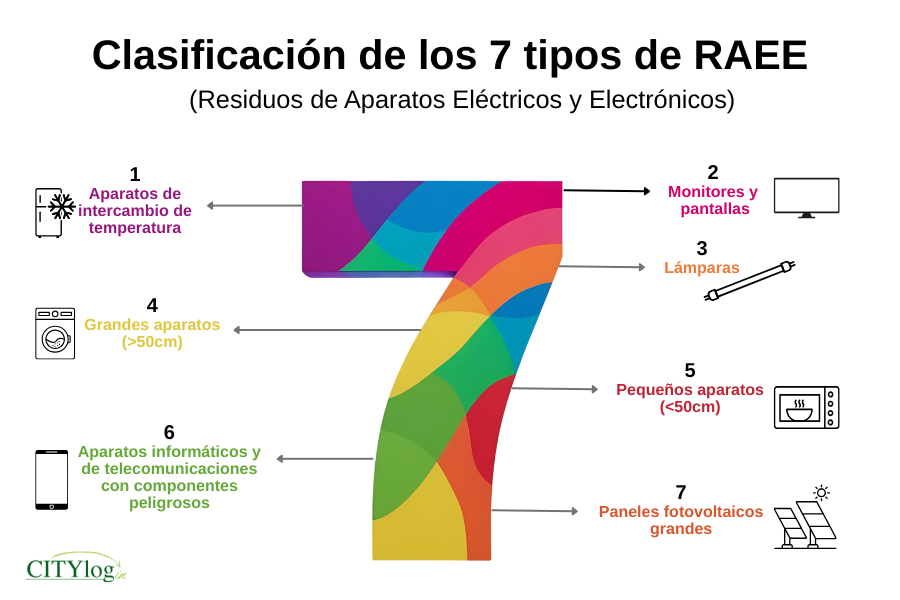
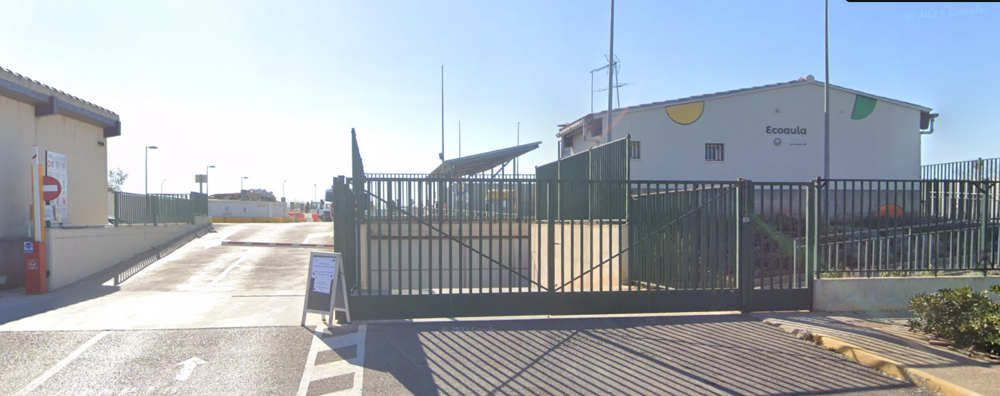

8. Gestión de residuos de aparatos eléctricos y electrónicos
Los equipos informáticos y de comunicaciones tienen una vida útil limitada. Cuando un ordenador, monitor, switch, impresora, teléfono, fuente de alimentación u otro equipo eléctrico o electrónico deja de utilizarse y se desecha, pasa a considerarse un residuo de aparato eléctrico y electrónico (RAEE).

Los RAEE se clasifican en diferentes categorías según el tipo y las características de los aparatos. Esta clasificación permite organizar su recogida, almacenamiento y tratamiento.
Actualmente se distinguen siete categorías de RAEE:
- Aparatos de intercambio de temperatura: equipos destinados a calentar o refrigerar, como frigoríficos, congeladores, aparatos de aire acondicionado o bombas de calor.
- Monitores y pantallas: equipos que disponen de una pantalla, como televisores, monitores de ordenador o determinadas pantallas electrónicas.
- Grandes aparatos (> 50 cm): aparatos eléctricos o electrónicos cuyas dimensiones exteriores son superiores a 50 cm y que no pertenecen a las categorías anteriores. Por ejemplo, lavadoras, lavavajillas o determinados equipos de gran tamaño.
- Lámparas: aparatos destinados a producir luz mediante diferentes tecnologías, como determinadas lámparas fluorescentes, de descarga o LED.
- Pequeños aparatos (< 50 cm): aparatos eléctricos o electrónicos cuyas dimensiones exteriores son iguales o inferiores a 50 cm y que no pertenecen a las categorías anteriores. Por ejemplo, teclados, ratones, pequeños electrodomésticos o determinados dispositivos electrónicos.
- Aparatos informáticos y de telecomunicaciones con componentes peligrosos: determinados equipos informáticos y de telecomunicaciones que contienen componentes o sustancias que requieren un tratamiento específico. Entre ellos pueden encontrarse determinados equipos antiguos o aparatos que contienen componentes peligrosos.
- Paneles fotovoltaicos: dispositivos utilizados para convertir la energía solar en energía eléctrica. Cuando dejan de utilizarse y se desechan, se gestionan como una categoría específica de RAEE.
Esta clasificación es importante porque los diferentes tipos de aparatos pueden contener materiales y componentes que requieren procesos de recogida y tratamiento diferentes.
Por ejemplo, un ordenador puede contener metales como hierro, aluminio, cobre y pequeñas cantidades de metales de mayor valor, además de plásticos y otros materiales. Algunos aparatos también pueden contener sustancias peligrosas. Por este motivo, los equipos electrónicos no deben depositarse junto con los residuos domésticos convencionales.
La gestión de los RAEE está regulada en España principalmente por el Real Decreto 110/2015, de 20 de febrero, sobre residuos de aparatos eléctricos y electrónicos. Esta normativa establece medidas para prevenir la generación de estos residuos y regula su recogida, almacenamiento, transporte, tratamiento y valorización.
8.1. Prevención y reutilización
La primera medida para reducir el impacto ambiental de los equipos informáticos consiste en evitar generar residuos innecesariamente.
Antes de desechar un equipo, puede ser posible:
- prolongar su vida útil mediante mantenimiento o reparación;
- actualizar determinados componentes;
- reutilizar el equipo para otra función;
- entregar el equipo a otra persona u organización que pueda seguir utilizándolo.
Por ejemplo, un ordenador que ya no tiene suficiente rendimiento para ejecutar aplicaciones actuales puede seguir siendo útil para tareas básicas, como navegación web, ofimática o reproducción multimedia.
La reutilización permite aprovechar el equipo durante más tiempo y evita generar un residuo antes de que sea necesario.
No es lo mismo reutilizar que reciclar
Reutilizar significa volver a utilizar un aparato o sus componentes para una finalidad similar, sin convertirlos previamente en materias primas.
Reciclar consiste en recuperar materiales contenidos en los residuos para utilizarlos posteriormente como materias primas.
Por ejemplo, entregar un ordenador usado para que otra persona continúe utilizándolo es reutilización. Separar el cobre, aluminio, hierro o determinados plásticos de un ordenador que ya no puede utilizarse es reciclaje.
La normativa establece una jerarquía en la gestión de los residuos: se da prioridad a la prevención, seguida de la preparación para la reutilización, el reciclado, otras formas de valorización y, como última opción, la eliminación.
8.2. Recogida separada y entrega de los RAEE
Cuando un aparato eléctrico o electrónico ya no puede reutilizarse y se convierte en residuo, debe realizarse una recogida separada.
Esto significa que los RAEE no deben mezclarse con otros residuos. La recogida separada permite transportar los aparatos hasta instalaciones donde puedan ser clasificados, preparados para su reutilización, reciclados o sometidos al tratamiento necesario.
Entre los equipos informáticos y electrónicos que pueden convertirse en RAEE se encuentran:
- ordenadores y portátiles;
- monitores y pantallas;
- impresoras y escáneres;
- routers, switches y otros equipos de comunicaciones;
- fuentes de alimentación;
- teléfonos y otros dispositivos electrónicos;
- periféricos y determinados accesorios eléctricos o electrónicos.
El símbolo del contenedor de basura tachado indica que el aparato no debe depositarse junto con los residuos domésticos. Este símbolo informa de que el aparato debe recogerse y gestionarse de forma separada.
No tirar un equipo informático a la basura
Un ordenador, monitor, impresora o dispositivo de red que se haya convertido en residuo no debe depositarse en un contenedor destinado a los residuos domésticos.
Debe entregarse mediante alguno de los sistemas de recogida establecidos para los RAEE, como los puntos de recogida habilitados, los establecimientos distribuidores o los gestores autorizados.
En València existen diferentes opciones para entregar los aparatos eléctricos y electrónicos que ya no se necesitan. Una de las principales son los ecoparques, instalaciones destinadas a recoger de forma separada diferentes tipos de residuos.
Por ejemplo, el Ecoparque de Vara de Quart permite depositar diferentes residuos, entre ellos aparatos electrodomésticos y aparatos informáticos. Se encuentra en el camino de l'Alqueria de la Morera, en València.

También existen ecoparques móviles que se desplazan periódicamente por diferentes barrios de la ciudad. Esto permite entregar pequeños aparatos eléctricos y electrónicos sin tener que desplazarse hasta un ecoparque fijo. El Ayuntamiento de València publica un calendario con las ubicaciones y horarios de los ecoparques móviles.
Calendario de ecoparques móviles de València 2026
Entre los residuos que se pueden depositar en estos ecoparques móviles se encuentran, por ejemplo, teléfonos móviles, cargadores, pequeños electrodomésticos, cables, cartuchos de tinta, tóneres, pilas y determinados aparatos electrónicos.
Para aparatos de mayor tamaño existen también los ecoparques fijos de la red metropolitana gestionada por la EMTRE (Entidad Metropolitana para el Tratamiento de Residuos). Estos ecoparques admiten RAEE, aunque las cantidades permitidas y las condiciones de entrega pueden variar según el tipo de residuo.
Otra posibilidad es entregar un aparato antiguo al establecimiento distribuidor cuando se adquiere un aparato nuevo equivalente, de acuerdo con las condiciones establecidas para la recogida de RAEE.
Ejemplos prácticos
Si un teclado o un teléfono móvil deja de funcionar, se puede llevar a un ecoparque móvil cuando esté disponible en el barrio.
Si se necesita retirar varios ordenadores antiguos de un aula o de una empresa, puede ser más adecuado utilizar un ecoparque fijo o recurrir a un gestor autorizado de residuos.
Si se sustituye un electrodoméstico por otro nuevo, también puede existir la posibilidad de entregar el aparato antiguo al distribuidor.
Antes de desplazarse, es conveniente comprobar qué residuos admite el punto de recogida, las cantidades permitidas y sus horarios, ya que estas condiciones pueden variar según la instalación.
8.3. Tratamiento de los RAEE
Una vez recogidos, los RAEE son transportados a instalaciones autorizadas para su tratamiento.
El tratamiento puede incluir diferentes etapas. En primer lugar, los equipos pueden clasificarse y, cuando sea posible, prepararse para su reutilización. Los equipos que no pueden reutilizarse se desmontan y se separan sus diferentes componentes y materiales.
Durante este proceso pueden recuperarse materiales como:
- metales ferrosos, como el hierro y el acero;
- metales no ferrosos, como el aluminio y el cobre;
- determinados metales de mayor valor;
- diferentes tipos de plásticos;
- vidrio y otros materiales.
También deben identificarse y tratarse adecuadamente los componentes y sustancias que puedan resultar peligrosos.
El reciclaje no consiste simplemente en desmontar el equipo
Los RAEE deben gestionarse en instalaciones que dispongan de los medios adecuados para realizar su tratamiento.
El objetivo es recuperar materiales aprovechables y, al mismo tiempo, evitar que sustancias potencialmente peligrosas sean liberadas al medio ambiente.
Las instalaciones de recogida y tratamiento deben cumplir determinadas condiciones de almacenamiento y seguridad. Por ejemplo, los RAEE deben mantenerse separados según las fracciones correspondientes y deben evitarse daños que puedan provocar la liberación de sustancias peligrosas.
8.4. Responsabilidad de los fabricantes
La gestión de los RAEE no corresponde únicamente al usuario que desecha un aparato. La normativa establece también obligaciones para los productores de aparatos eléctricos y electrónicos.
Uno de los principios utilizados es la responsabilidad ampliada del productor. Los productores deben asumir determinadas responsabilidades relacionadas con la gestión de los residuos procedentes de los aparatos que ponen en el mercado.
Entre otras cuestiones, los productores deben participar en la financiación y organización de los sistemas de gestión de estos residuos de acuerdo con las obligaciones establecidas por la normativa.
Este sistema pretende que el coste y la responsabilidad de gestionar los aparatos cuando llegan al final de su vida útil se tengan en cuenta desde el momento en que se ponen en el mercado.
8.5. Gestión de residuos en una instalación informática
En una instalación informática profesional pueden generarse diferentes tipos de residuos. No todos deben gestionarse de la misma manera.
Por ejemplo, si una empresa sustituye varios ordenadores, los equipos que todavía funcionan pueden destinarse a la reutilización. Los equipos que ya no pueden utilizarse deben gestionarse como RAEE mediante los canales correspondientes.
También pueden aparecer otros residuos asociados a la instalación o mantenimiento de equipos, como cables, embalajes, consumibles o baterías. Cada tipo de residuo debe gestionarse mediante el sistema de recogida que le corresponda.
Por tanto, un técnico de sistemas y redes debe tener en cuenta la gestión de residuos cuando realiza tareas como la renovación de equipos, el mantenimiento de una instalación o la retirada de material informático.
Ejemplo
Una empresa sustituye 20 ordenadores antiguos por equipos nuevos.
Antes de desecharlos, se comprueba cuáles siguen funcionando. Los equipos que pueden utilizarse se preparan para su reutilización.
Los equipos que no pueden reutilizarse se separan y se entregan a través de un sistema adecuado de recogida de RAEE.
De esta forma se evita que los equipos terminen junto con los residuos convencionales y se facilita la recuperación de los materiales que contienen.
8.6. Buenas prácticas
En una instalación informática es recomendable:
- Prolongar la vida útil de los equipos siempre que sea posible.
- Reparar o actualizar los equipos antes de sustituirlos cuando resulte adecuado.
- Reutilizar los equipos que todavía puedan prestar servicio.
- Separar los RAEE de los residuos convencionales.
- Entregar los equipos mediante los sistemas de recogida establecidos.
- No desmontar ni manipular de forma inadecuada componentes que puedan contener sustancias peligrosas.
- Eliminar correctamente los datos de los dispositivos de almacenamiento antes de entregar un equipo para su reutilización o reciclaje.
Protección de los datos
La gestión de un RAEE no sustituye a la obligación de proteger la información almacenada en el equipo.
Antes de entregar un ordenador, disco duro, SSD, teléfono u otro dispositivo que contenga información, deben aplicarse los procedimientos establecidos por la organización para eliminar los datos de forma segura.
La gestión adecuada de los RAEE permite reducir el impacto ambiental de los equipos informáticos, recuperar materiales que pueden volver a utilizarse y evitar que sustancias potencialmente peligrosas sean gestionadas de forma incorrecta.